唐招提寺
| 日付 | 2018年1月2日（火） |
|---|---|
| メンバー | 家族（妻、長女・6歳、長男・4歳、姉一家） |
| アクセス | 車 |
初詣で行った社寺を振り返ってみると、
奈良の有名どころは行きつくした感がある。
今年の初詣は未訪の唐招提寺に行くことにする。
東大寺や法隆寺より知名度は劣るが、世界遺産に登録されている名刹だ。
駐車場に車を停める。奈良の寺院はどこも空いているので助かる。
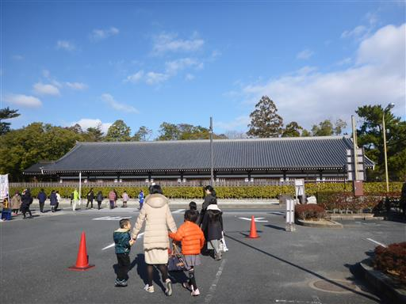
入口は立派な南大門。この門は再建されたもので比較的新しい。
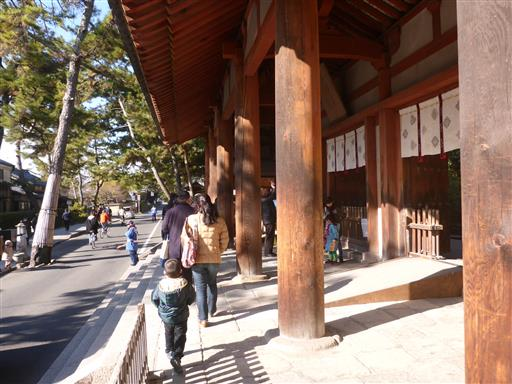
境内に入ると立派な金堂が現れる。
唐招提寺の代表的な建造物で国宝に指定されている。
2009年まで解体修理が行われていた。
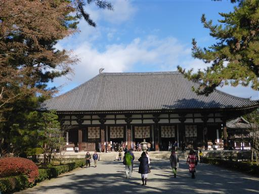
金堂の中には仏像、薬師如来像、千手観音像が祀られている。
千手観音像の手は見事で、953本の手が現存しているらしい。
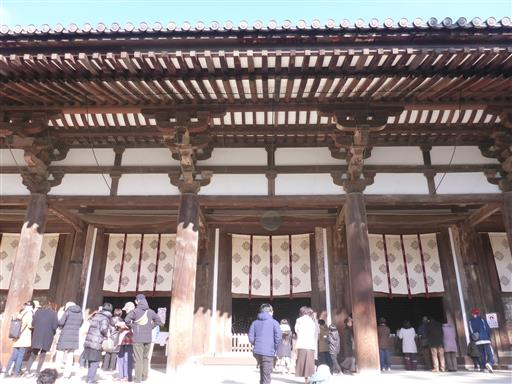
講堂と鼓楼。何れも国宝だ。
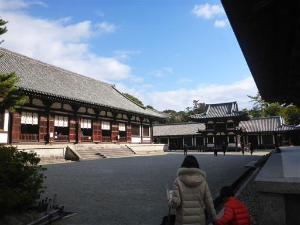
境内は広い。さらに奥を散策する。
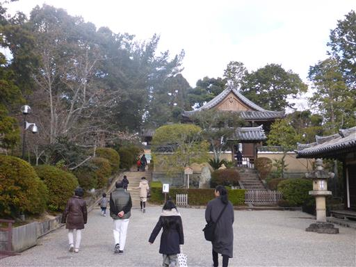
階段を上って少し高台から景色を眺める子供たち。
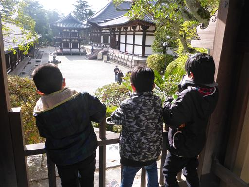
御影堂は大規模修理中で拝観はできない。
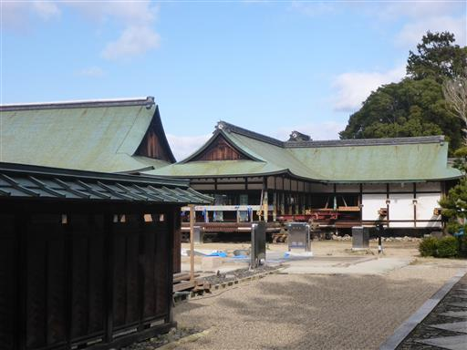
森の中の道を通って、さらに奥にある鑑真廟を目指す。
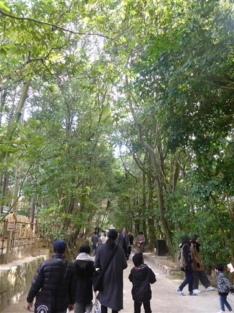
門を潜ると一面苔に覆われた美しい景観が広がる。
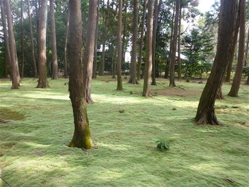
池に住むコイを眺める子供たち。
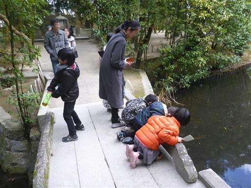
鑑真廟。鑑真はこの寺院の創立者で、この地に眠っている。

周囲の池にはなぜか白いネットが等間隔に並んでいる。
落ち葉を集めているのだろうか？
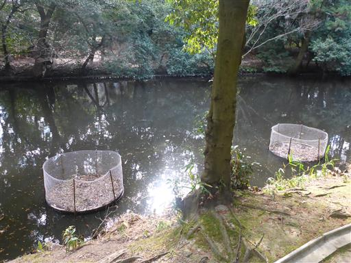
鑑真廟の見学を終えたら東室～礼堂の間を抜けて金堂に戻ってくる。
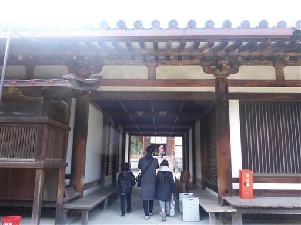
最後に宝蔵と経蔵を見学する。校倉造の美しい建造物だ。
お昼になったので唐招提寺を後にして昼食に向かう。
唐招提寺は派手さはないが金堂や薬師如来像など見どころがあって良い寺院だった。
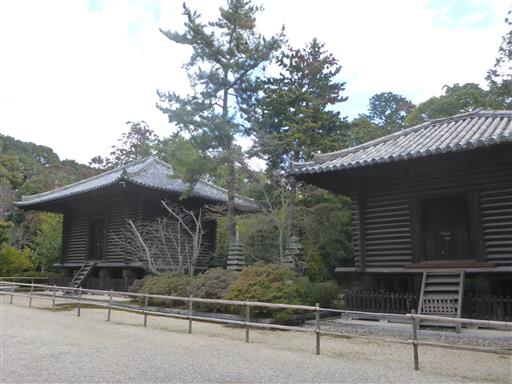